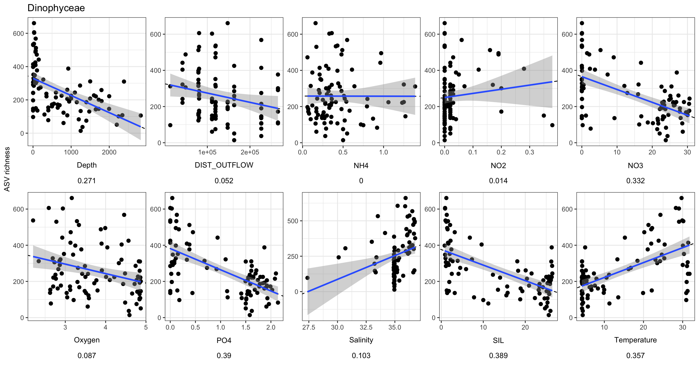
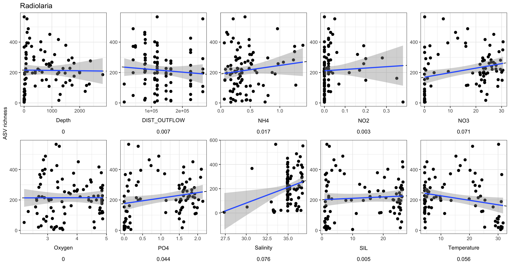

library(tidyverse);library(phyloseq); library(decontam)
library(compositions); library(patchwork);
library(ggupset); library(gt)
library(plotly); library(viridis); library(vegan)2023 Gulf data analysis
1 Contents & introduction
1.1 Set up R environment
Set up R & import starting data
Import ASV tables as R objects.
load(file = "input-data/asv_wtax_qc_GoM23_102025.RData", verbose = TRUE)Loading objects:
samples_too_low
asv_wide_cleaned
asv_long_cleanedImport & compile metadata
master_metadata <- read.csv("input-data/grad23_master.csv", header = TRUE,
check.names = FALSE, na.strings = "--")
# head(master_metadata)
cellcounts <- read.csv("cellcounts-sept22.csv")1.2 Modify metadata file
colnames(master_metadata) [1] "Station" "Niskin"
[3] "Targeted Depth (m)" "CTD Recorded Depth (m)"
[5] "CTD Pressure (db)" "NMEA Latitude"
[7] "NMEA Longitude" "Date"
[9] "Time (UTC)" "CFC Bottle"
[11] "O2 Flask" "Methane/N_O"
[13] "DIC/TA flask" "CDOM"
[15] "Viscosity / PAM/Turn." "Nutrients"
[17] "DON" "___O"
[19] "Salinity" "Microbio Filters"
[21] "Microscopy" "HOC / DOC"
[23] "CTD Temperature" "Uncorrected CTD Conductivity"
[25] "Corrected CTD Conductivity" "Bottle Conductivity"
[27] "Bottle Conductivity (Dupes)" "Uncorrected CTD Salinity"
[29] "Corrected CTD Salinity" "Bottle Salinity"
[31] "Bottle Salinity (Dupes)" "Uncorrected CTD Oxygen"
[33] "Corrected CTD Oxygen" "Bottle Oxygen (ml/l)"
[35] "Bottle Oxygen (Dupes)" "CTD Fluorescence"
[37] "NO3" "PO4"
[39] "SIL" "NO2"
[41] "NH4" "Notes" # str(master_metadata)
# str(cellcounts)
env_metadata_toplot <- master_metadata %>%
mutate(depth_feature = case_when(
grepl("O2 min", Notes) ~ "O2 min",
grepl("DCM", Notes) ~ "DCM"
)) %>%
mutate(Station = as.integer(Station)) %>%
select(Station, Niskin, Depth = `CTD Recorded Depth (m)`, depth_feature, Latitude = `NMEA Latitude`, Longitude = `NMEA Longitude`,
Date, Time_UTC = `Time (UTC)`, Temperature = `CTD Temperature`, Salinity = `Corrected CTD Salinity`,
Oxygen = `Corrected CTD Oxygen`, NO3, PO4, SIL, NO2, NH4) %>%
left_join(cellcounts %>% select(Station, Niskin, Prok_count = `prok.count`)) %>%
separate_longer_delim(c(NO3, PO4, SIL, NO2, NH4), delim = " / ") %>%
pivot_longer(cols = c(Temperature, Salinity, Oxygen, NO3, PO4, SIL, NO2, NH4, Prok_count), names_to = "ENV_VARIABLE", values_to = "VALUE", values_drop_na = TRUE, values_transform = as.numeric) %>%
group_by(Station, Niskin, Depth, depth_feature, Latitude, Longitude, Date, Time_UTC, ENV_VARIABLE) %>%
summarise(value = mean(VALUE))Warning: There was 1 warning in `mutate()`.
ℹ In argument: `Station = as.integer(Station)`.
Caused by warning:
! NAs introduced by coercionJoining with `by = join_by(Station, Niskin)`
`summarise()` has grouped output by 'Station', 'Niskin', 'Depth',
'depth_feature', 'Latitude', 'Longitude', 'Date', 'Time_UTC'. You can override
using the `.groups` argument.1.2.1 Create metabarcoding table with metadata
# head(asv_long_cleaned)
# head(env_metadata_toplot)
# Widen environmental metadata to add to ASV df.
tmp_forasv <- env_metadata_toplot %>%
filter(!is.na(ENV_VARIABLE)) |>
pivot_wider(names_from = ENV_VARIABLE, values_from = value)
asv_long_cleaned_wenv <- asv_long_cleaned %>%
separate(SAMPLES, into = c("gom", "STATION", "NISKIN", "extra"), sep = "_") %>%
mutate(Station = as.integer(str_remove(STATION, "S")),
Niskin = as.integer(str_remove(NISKIN, "N"))) %>%
unite(STN_NISKIN, STATION, NISKIN, sep = "_") %>%
select(-gom, -extra) %>%
left_join(tmp_forasv) Warning: Expected 4 pieces. Additional pieces discarded in 209269 rows [1, 2, 3, 4, 5,
6, 7, 8, 9, 10, 11, 12, 13, 14, 15, 16, 17, 18, 19, 20, ...].Joining with `by = join_by(Station, Niskin)`head(asv_long_cleaned_wenv)# A tibble: 6 × 30
FeatureID Taxon Domain Supergroup Division Subdivision Class Order Family
<chr> <chr> <chr> <chr> <chr> <chr> <chr> <chr> <chr>
1 5bf3b429509ca… Euka… Eukar… Obazoa Opistho… Metazoa Arth… Crus… Maxil…
2 5bf3b429509ca… Euka… Eukar… Obazoa Opistho… Metazoa Arth… Crus… Maxil…
3 5bf3b429509ca… Euka… Eukar… Obazoa Opistho… Metazoa Arth… Crus… Maxil…
4 5bf3b429509ca… Euka… Eukar… Obazoa Opistho… Metazoa Arth… Crus… Maxil…
5 5bf3b429509ca… Euka… Eukar… Obazoa Opistho… Metazoa Arth… Crus… Maxil…
6 5bf3b429509ca… Euka… Eukar… Obazoa Opistho… Metazoa Arth… Crus… Maxil…
# ℹ 21 more variables: Genus <chr>, Species <chr>, STN_NISKIN <chr>,
# SEQUENCE_COUNT <dbl>, Station <int>, Niskin <int>, Depth <dbl>,
# depth_feature <chr>, Latitude <dbl>, Longitude <dbl>, Date <chr>,
# Time_UTC <chr>, NH4 <dbl>, NO2 <dbl>, NO3 <dbl>, Oxygen <dbl>, PO4 <dbl>,
# SIL <dbl>, Salinity <dbl>, Temperature <dbl>, Prok_count <dbl>1.3 Calculate distance from shore
Distance from shore
library(geosphere)
# Long, Lat order
outflow_lat <- 28.95
outflow_long <- 89.39
outflow <- c(outflow_long, outflow_lat)
outflow[1] 89.39 28.95Set up ordering of stations and locations.
stn_info <- read.csv("input-data/manual_stn_classification.csv")
offshore_on_shore_order <- c("S1", "S2", "S3", "S4", "S5","S9", "S8", "S7", "S11", "S12", "S14", "S15")
transect_labels <- c("transect1", "transect1", "transect1", "transect1", "transect1", "transect2", "transect2", "transect2", "transect3", "transect3", "transect3", "transect3")
depth_order <- as.character(sort((unique(env_metadata_toplot$Depth))))
depth_order_round <- as.character(sort(round(unique(env_metadata_toplot$Depth), digits = 0)))
depth_bin <- c("< 5m","5-25m","25-60m",
"60-270m","270-400m","400-800m",
"800-1200m","1200-2000m","2000-3000m")
depth_bin_CHARC <- c("..5m","5.25m","25.60m",
"60.270m","270.400m","400.800m",
"800.1200m","1200.2000m","2000.3000m")
asv_long_cleaned_wenv_mod <- asv_long_cleaned_wenv %>%
left_join(stn_info) %>%
mutate(stn = paste("S", Station, sep = "")) %>%
mutate(STN_ORDER = factor(stn, levels = offshore_on_shore_order),
TRANSECT = factor(stn, levels = offshore_on_shore_order, labels = transect_labels),
DEPTH_ORDER = factor(Depth, levels = rev(depth_order), labels = rev(depth_order_round))) %>%
mutate(DIST_OUTFLOW = distHaversine(cbind(Longitude, Latitude), cbind(outflow_long, outflow_lat))) %>%
mutate(DEPTH_BIN = case_when(
Depth <= 5 ~ "< 5m",
Depth > 5 & Depth <=25 ~ "5-25m",
Depth > 25 & Depth <=60 ~ "25-60m",
Depth > 60 & Depth <=270 ~ "60-270m",
Depth > 270 & Depth <=400 ~ "270-400m",
Depth > 400 & Depth <=800 ~ "400-800m",
Depth > 800 & Depth <=1200 ~ "800-1200m",
Depth > 1200 & Depth <=2000 ~ "1200-2000m",
Depth > 2000 & Depth <=3000 ~ "2000-3000m",
))Joining with `by = join_by(Station)`# dim(asv_long_cleaned_wenv)
# dim(asv_long_cleaned_wenv_mod)1.4 Study stats
range(asv_long_cleaned_wenv_mod$Station)[1] 1 15length(unique(asv_long_cleaned_wenv_mod$Station)) # 12 stations[1] 12(unique(asv_long_cleaned_wenv_mod$Station)) # 12 stations [1] 15 1 11 12 14 2 3 4 5 7 8 9length(unique(asv_long_cleaned_wenv_mod$STN_NISKIN)) # 91 unique samples[1] 91table1 <- asv_long_cleaned_wenv_mod %>%
select(STN_NISKIN, Station, Depth, depth_feature, Date, Time_UTC, Latitude, Longitude, Transect, DEPTH_BIN, DIST_OUTFLOW, NH4, NO2, NO3, Oxygen, PO4, SIL, Salinity, Temperature, Prok_count) %>%
distinct()
# head(table1)
write.csv(table1, file = "output-tables/table-samplelist.csv")2 Curate taxonomic assignment
# head(asv_long_cleaned_wenv_mod)
# unique(asv_long_cleaned_wenv_mod$Domain) # take EUKS
# unique(asv_long_cleaned_wenv_mod$Supergroup)
# unique(asv_long_cleaned_wenv_mod$Division)
# View(asv_long_cleaned_wenv_mod %>%
# select(Domain, Supergroup, Division, Subdivision, Class, Order, Family, Genus, Species) %>% distinct())asv_long_wenv_wtax <- asv_long_cleaned_wenv_mod %>%
filter(Domain == "Eukaryota") %>%
filter(Supergroup != "nucl") %>%
mutate(DIVISION = case_when(
Subdivision == "X" ~ "Unannotated",
is.na(Subdivision) ~ "Unannotated",
TRUE ~ Subdivision
)) %>%
# Goal is to combine Subdivision-Class
mutate(SUPERGROUP_CLASS = case_when(
## High level NAs at the supergroup and division level
(is.na(Division) & !is.na(Supergroup)) ~ paste(Supergroup, "Unannotated", sep = "-"),
(is.na(Division) & is.na(Supergroup)) ~ "Eukaryote-Unannotated",
(is.na(Subdivision)) ~ paste(Supergroup, "Unannotated", sep = "-"),
(is.na(Class) & !is.na(Subdivision)) ~ paste(Subdivision, "Unannotated", sep = "-"),
#
(Subdivision == "X") ~ paste(Division, "Unannotated", sep = "-"),
(Class == "X") ~ paste(Subdivision, "Unannotated", sep = "-"),
TRUE ~ paste(Subdivision, Class, sep = "-"))) %>%
mutate(Supergroup_simplified = case_when(
Supergroup == "TSAR" ~ paste("TSAR", Subdivision, sep = "-"),
Supergroup == "Obazoa" ~ paste("Obazoa", DIVISION, sep = "-"),
TRUE ~ Supergroup
))
#
# sort(unique(tmp$DIVISION))
# sort(unique(tmp$Subdivision))
# unique(tmp$SUPERGROUP_CLASS)
# head(asv_long_clean_wtax)
tax_key <- asv_long_wenv_wtax %>%
select(FeatureID, Taxon, Supergroup, Division, Subdivision, Class, Order, Family, Genus, Species) %>% distinct()2.1 Average across replicates
head(asv_long_wenv_wtax)# A tibble: 6 × 43
FeatureID Taxon Domain Supergroup Division Subdivision Class Order Family
<chr> <chr> <chr> <chr> <chr> <chr> <chr> <chr> <chr>
1 5bf3b429509ca… Euka… Eukar… Obazoa Opistho… Metazoa Arth… Crus… Maxil…
2 5bf3b429509ca… Euka… Eukar… Obazoa Opistho… Metazoa Arth… Crus… Maxil…
3 5bf3b429509ca… Euka… Eukar… Obazoa Opistho… Metazoa Arth… Crus… Maxil…
4 5bf3b429509ca… Euka… Eukar… Obazoa Opistho… Metazoa Arth… Crus… Maxil…
5 5bf3b429509ca… Euka… Eukar… Obazoa Opistho… Metazoa Arth… Crus… Maxil…
6 5bf3b429509ca… Euka… Eukar… Obazoa Opistho… Metazoa Arth… Crus… Maxil…
# ℹ 34 more variables: Genus <chr>, Species <chr>, STN_NISKIN <chr>,
# SEQUENCE_COUNT <dbl>, Station <int>, Niskin <int>, Depth <dbl>,
# depth_feature <chr>, Latitude <dbl>, Longitude <dbl>, Date <chr>,
# Time_UTC <chr>, NH4 <dbl>, NO2 <dbl>, NO3 <dbl>, Oxygen <dbl>, PO4 <dbl>,
# SIL <dbl>, Salinity <dbl>, Temperature <dbl>, Prok_count <dbl>,
# Transect <int>, STN_CATEGORY_3 <chr>, STN_CATEGORY_4 <chr>,
# PROX_TOSHORE <int>, stn <chr>, STN_ORDER <fct>, TRANSECT <fct>, …asv_long_avg_wtax <- asv_long_wenv_wtax %>%
# First average ASV sequence count across replicates
group_by(FeatureID, Taxon, DIVISION, SUPERGROUP_CLASS, Supergroup_simplified, Supergroup, Division, Subdivision, Class, Order, Family, Genus, Species,
STN_NISKIN, Station, Niskin, Depth, depth_feature, Latitude, Longitude, Temperature, Salinity, Oxygen, NH4, NO2, NO3, PO4, SIL, Prok_count,
STN_CATEGORY_3, STN_CATEGORY_4, STN_ORDER, TRANSECT, DEPTH_ORDER, DIST_OUTFLOW, DEPTH_BIN) %>%
summarise(MEAN_REPS_seq = mean(SEQUENCE_COUNT)) %>%
filter(STN_NISKIN != "S12_N10") |>
ungroup()`summarise()` has grouped output by 'FeatureID', 'Taxon', 'DIVISION',
'SUPERGROUP_CLASS', 'Supergroup_simplified', 'Supergroup', 'Division',
'Subdivision', 'Class', 'Order', 'Family', 'Genus', 'Species', 'STN_NISKIN',
'Station', 'Niskin', 'Depth', 'depth_feature', 'Latitude', 'Longitude',
'Temperature', 'Salinity', 'Oxygen', 'NH4', 'NO2', 'NO3', 'PO4', 'SIL',
'Prok_count', 'STN_CATEGORY_3', 'STN_CATEGORY_4', 'STN_ORDER', 'TRANSECT',
'DEPTH_ORDER', 'DIST_OUTFLOW'. You can override using the `.groups` argument.head(asv_long_avg_wtax)# A tibble: 6 × 37
FeatureID Taxon DIVISION SUPERGROUP_CLASS Supergroup_simplified Supergroup
<chr> <chr> <chr> <chr> <chr> <chr>
1 0001b2ea4223… Euka… Dinofla… Dinoflagellata-… TSAR-Dinoflagellata TSAR
2 0004be388d73… Euka… Dinofla… Dinoflagellata-… TSAR-Dinoflagellata TSAR
3 000761c7389a… Euka… Dinofla… Dinoflagellata-… TSAR-Dinoflagellata TSAR
4 000964551660… Euka… Radiola… Radiolaria-Acan… TSAR-Radiolaria TSAR
5 000964551660… Euka… Radiola… Radiolaria-Acan… TSAR-Radiolaria TSAR
6 000964551660… Euka… Radiola… Radiolaria-Acan… TSAR-Radiolaria TSAR
# ℹ 31 more variables: Division <chr>, Subdivision <chr>, Class <chr>,
# Order <chr>, Family <chr>, Genus <chr>, Species <chr>, STN_NISKIN <chr>,
# Station <int>, Niskin <int>, Depth <dbl>, depth_feature <chr>,
# Latitude <dbl>, Longitude <dbl>, Temperature <dbl>, Salinity <dbl>,
# Oxygen <dbl>, NH4 <dbl>, NO2 <dbl>, NO3 <dbl>, PO4 <dbl>, SIL <dbl>,
# Prok_count <dbl>, STN_CATEGORY_3 <chr>, STN_CATEGORY_4 <chr>,
# STN_ORDER <fct>, TRANSECT <fct>, DEPTH_ORDER <fct>, DIST_OUTFLOW <dbl>, …# unique(asv_long_avg_wtax$STN_CATEGORY_4)3 Data frames for analysis
Central data frames:
asv_long_wenv_wtaxtax_keyenv_info_modenv_metadata_toplotasv_long_avg_wtax
# save(asv_long_wenv_wtax, tax_key, env_metadata_toplot, asv_long_avg_wtax, file = "input-data/gulf-2023-sequence-analysis_10252025.RData")4 Sample comparison & taxonomic classification
4.1 PCA analysis
Create wide format matrix with sequence counts averaged across replicates (by ASV)
head(asv_long_avg_wtax)# A tibble: 6 × 37
FeatureID Taxon DIVISION SUPERGROUP_CLASS Supergroup_simplified Supergroup
<chr> <chr> <chr> <chr> <chr> <chr>
1 0001b2ea4223… Euka… Dinofla… Dinoflagellata-… TSAR-Dinoflagellata TSAR
2 0004be388d73… Euka… Dinofla… Dinoflagellata-… TSAR-Dinoflagellata TSAR
3 000761c7389a… Euka… Dinofla… Dinoflagellata-… TSAR-Dinoflagellata TSAR
4 000964551660… Euka… Radiola… Radiolaria-Acan… TSAR-Radiolaria TSAR
5 000964551660… Euka… Radiola… Radiolaria-Acan… TSAR-Radiolaria TSAR
6 000964551660… Euka… Radiola… Radiolaria-Acan… TSAR-Radiolaria TSAR
# ℹ 31 more variables: Division <chr>, Subdivision <chr>, Class <chr>,
# Order <chr>, Family <chr>, Genus <chr>, Species <chr>, STN_NISKIN <chr>,
# Station <int>, Niskin <int>, Depth <dbl>, depth_feature <chr>,
# Latitude <dbl>, Longitude <dbl>, Temperature <dbl>, Salinity <dbl>,
# Oxygen <dbl>, NH4 <dbl>, NO2 <dbl>, NO3 <dbl>, PO4 <dbl>, SIL <dbl>,
# Prok_count <dbl>, STN_CATEGORY_3 <chr>, STN_CATEGORY_4 <chr>,
# STN_ORDER <fct>, TRANSECT <fct>, DEPTH_ORDER <fct>, DIST_OUTFLOW <dbl>, …Station & depth info
stn_depth_info <- asv_long_avg_wtax |>
select(STN_NISKIN, Station, Niskin, Depth, depth_feature, Latitude, Longitude, Temperature, Salinity, Oxygen, NH4, NO2, NO3, PO4, SIL, Prok_count,
STN_CATEGORY_3, STN_CATEGORY_4, STN_ORDER, TRANSECT, DEPTH_ORDER, DIST_OUTFLOW, DEPTH_BIN) |>
filter(STN_NISKIN != "S12_N10") |>
distinct()Make wide format and as a matrix
asv_wide_avg_matrix <- asv_long_avg_wtax %>%
select(FeatureID, STN_NISKIN, MEAN_REPS_seq) %>%
filter(STN_NISKIN != "S12_N10") |>
pivot_wider(names_from = STN_NISKIN, values_from = MEAN_REPS_seq, values_fn = mean, values_fill = 0) %>%
column_to_rownames(var = "FeatureID") %>%
as.matrix()pca_clr <- prcomp(data.frame(compositions::clr(t(asv_wide_avg_matrix))))
# ?prcompvariance_clr <- (pca_clr$sdev^2)/sum(pca_clr$sdev^2)
barplot(variance_clr, main = "Log-Ratio PCA Screeplot", xlab = "PC Axis", ylab = "% Variance",
cex.names = 1.5, cex.axis = 1.5, cex.lab = 1.5, cex.main = 1.5)
Plot PCA
blues <- c("#dde4f0","#b7cae8","#96b3e3",
"#6b94d6","#3473d9", "#0b4fbd",
"#0b429c", "#07214a", "#081730")
PCA_PLOT <- data.frame(pca_clr$x, STN_NISKIN = rownames(pca_clr$x)) %>%
select(PC1, PC2, PC3, STN_NISKIN) %>%
left_join(stn_depth_info) |>
mutate(depth = as.numeric(DEPTH_ORDER)) |>
mutate(depth_feature = str_replace_na(depth_feature, replacement = "other")) |>
## Generate PCA plot
ggplot(aes(x = PC1, y = PC2,
shape = depth_feature,
fill = DEPTH_BIN)) +
geom_hline(yintercept = 0) + geom_vline(xintercept = 0, color = "#525252") +
geom_point(stroke = 0.6, alpha = 0.8, size = 4) +
ylab(paste0('PC2 ',round(variance_clr[2]*100,2),'%')) +
xlab(paste0('PC1 ',round(variance_clr[1]*100,2),'%')) +
scale_shape_manual(values = c(24, 23, 21)) +
scale_fill_manual(values = blues) +
# scale_size_continuous(range = c(2, 6)) +
theme_bw() +
theme(axis.text = element_text(color="black", size=12),
legend.title = element_blank(),
axis.title = element_text(color="black", size= 12),
legend.text = element_text(color = "black", size = 8, face = "bold"),
plot.margin = margin(2, 1, 2, 1, "cm")) +
guides(fill = guide_legend(override.aes = list(
color = "black",
shape = 22,
size = 5)),
shape = guide_legend(override.aes = list(
color = "black",
size = 5)))Joining with `by = join_by(STN_NISKIN)`PCA_PLOT
4.2 Combined dendrogram
library(ggdendro)
rel_abun <- decostand(asv_wide_avg_matrix, MARGIN = 2, method = "total")
# Cluster dendrogram (average hierarchical clustering)
cluster_gom <- hclust(dist(t(rel_abun)), method = "average")
dendro <- as.dendrogram(cluster_gom)
gom_dendro <- dendro_data(dendro, type = "rectangle")gom_dendro_plot <- ggplot(segment(gom_dendro)) +
geom_segment(aes(x = x, y = y, xend = xend,
yend = yend)) +
coord_flip() +
scale_y_reverse(expand = c(0.2, 0.5), breaks = c(0, 0.2, 0.4, 0.6, 0.8)) +
geom_text(aes(x = x, y = y, label = label, angle = 0, hjust = 0), data = label(gom_dendro)) +
theme_dendro() + labs(y = "Dissimilarity") +
theme(axis.text.x = element_text(color = "black", size = 14), axis.line.x = element_line(color = "#252525"),
axis.ticks.x = element_line(), axis.title.x = element_text(color = "black",
size = 14))
# svg('figs/SUPPLEMENTARY-dendrogram-wreps.svg', w = 10, h = 8)
gom_dendro_plot
Isolate label names that correspond to dendrogram.
tmp <- data.frame(gom_dendro$labels)
class(tmp)[1] "data.frame"labels_for_dendro <- as.character(tmp$label)
# labels_for_dendro4.2.1 Dendrogram annotation
blues <- c("#dde4f0","#b7cae8","#96b3e3",
"#6b94d6","#3473d9", "#0b4fbd",
"#0b429c", "#07214a", "#081730")
DEPTH <- stn_depth_info %>%
mutate(label_order = factor(STN_NISKIN, levels = labels_for_dendro)) %>%
ggplot(aes(y = label_order, x = 1, fill = DEPTH_BIN)) +
geom_point(shape = 22, color = "black", size = 4) +
scale_fill_manual(values = blues) +
scale_y_discrete(position = "right") +
theme_void() + theme(
legend.position = "right",
legend.title = element_blank(),
legend.text = element_text(color = "black"),
strip.background = element_blank(),
axis.ticks = element_blank(),
axis.title = element_text(color = "black"),
axis.text.y = element_text(color = "black"),
axis.text.x = element_blank()) +
guides(fill = guide_legend(reverse = TRUE, ncol = 1)) +
labs(x = "", y = "")
DEPTH
DIST <- stn_depth_info %>%
mutate(label_order = factor(STN_NISKIN, levels = labels_for_dendro)) %>%
mutate(dist_outflow = DIST_OUTFLOW/1000) %>%
ggplot(aes(y = label_order, x = 1, fill = dist_outflow)) +
geom_point(shape = 22, color = "black", size = 4) +
# scale_fill_continuous(option = "magma") +
scale_fill_viridis_c(option = "magma", direction = -1) +
# scale_fill_stepsn(colors = blues, breaks = c(50, 100, 300, 500, 1000, 1500, 2000)) +
theme_void() + theme(
legend.position = "right",
legend.title = element_blank(),
legend.text = element_text(color = "black"),
strip.background = element_blank(),
axis.ticks = element_blank(),
axis.title = element_text(color = "black"),
axis.text.y = element_text(color = "black"),
axis.text.x = element_blank()) +
guides(fill = guide_legend(reverse = TRUE, ncol = 1)) +
labs(x = "x10^3 km", y = "")
DIST
TRANSECT <- stn_depth_info %>%
mutate(label_order = factor(STN_NISKIN, levels = labels_for_dendro)) %>%
ggplot(aes(y = label_order, x = 1, fill = TRANSECT)) +
geom_point(shape = 22, color = "black", size = 4) +
scale_fill_manual(values = c("#ff8787", "#eaf576", "#76aff5")) +
theme_void() + theme(
legend.position = "right",
legend.title = element_blank(),
legend.text = element_text(color = "black"),
strip.background = element_blank(),
axis.ticks = element_blank(),
axis.title = element_text(color = "black"),
axis.text.y = element_text(color = "black"),
axis.text.x = element_blank()) +
guides(fill = guide_legend(reverse = TRUE, ncol = 1)) +
labs(x = "", y = "")
TRANSECT
PROK <- stn_depth_info %>%
mutate(label_order = factor(STN_NISKIN, levels = labels_for_dendro)) %>%
ggplot(aes(y = label_order, x = 1, fill = Prok_count)) +
geom_point(shape = 22, color = "black", size = 4) +
# scale_fill_manual(values = c("#ff8787", "#eaf576", "#76aff5")) +
scale_fill_fermenter(na.value = "grey30", palette = 3, direction = 1) +
theme_void() + theme(
legend.position = "right",
legend.title = element_blank(),
legend.text = element_text(color = "black"),
strip.background = element_blank(),
axis.ticks = element_blank(),
axis.title = element_text(color = "black"),
axis.text.y = element_text(color = "black"),
axis.text.x = element_blank()) +
guides(fill = guide_legend(reverse = TRUE, ncol = 1)) +
labs(x = "", y = "")
PROK
5 Taxonomy
Richness by depth, station, and feature.
asv_long_avg_wtax %>%
group_by(Station, depth_feature, DEPTH_BIN) %>%
summarise(SEQ_SUM = sum(MEAN_REPS_seq),
ASV_COUNT = n()) %>%
mutate(depth_feature = str_replace_na(depth_feature, replacement = "other")) |>
mutate(depth_bin_order = factor(DEPTH_BIN, levels = rev(depth_bin))) |>
ggplot(aes(x = as.factor(Station), y = depth_bin_order,
size = ASV_COUNT, fill = depth_feature)) +
geom_jitter(shape = 21, color = "black", stroke = 1.5) +
scale_x_discrete(position = "top") +
scale_fill_manual(values = c("#6edb8f", "#ab70e6", "#ebb923")) +
scale_size(range=c(3,7), guide="legend") +
theme_classic() +
theme(
axis.text.x = element_text(color = "black", size = 14),
axis.text.y = element_text(color = "black", size = 14),
panel.grid.major = element_line()
) +
labs(x = "", y = "Depth (m)")`summarise()` has grouped output by 'Station', 'depth_feature'. You can
override using the `.groups` argument.
tax_color <- c("#db1f7d", "#2c5c1d", "#806f8c",
"#f5bfb0", "#93c47d","#7c52bf", "#007a7a",
"#34495e", "#9b59b6", "#fea02f","#ee429b",
"#ffe8a4","#ff6f61","#fcf517","#8a0622",
"#ff7530", "#2986cc", "#e71414","#de6600",
"#1abc9c", "#a0b59f", "#d7b6d7", "#23b521", "#5b545c", "black", "white", "grey10", "grey60")
tax_simplified_list <- as.character((unique(asv_long_avg_wtax$Supergroup_simplified)))
names(tax_color) <- tax_simplified_listLow taxonomic resolution should be at DIVISION level. Then to SUPERGROUP_CLASS level.
5.0.1 For dendrogram
# Sum by taxonomic groups
TAX <- asv_long_avg_wtax %>%
group_by(STN_NISKIN, Station, Niskin, Depth, DEPTH_BIN,
DEPTH_ORDER, Supergroup_simplified) |>
summarise(SUM_SEQ = sum(MEAN_REPS_seq),
ASV_COUNT = n()) %>%
# Factoring and ordering
mutate(label_order = factor(STN_NISKIN, levels = labels_for_dendro)) %>%
mutate(label_order = str_remove(label_order, "_")) |>
ggplot(aes(y = (label_order), x = SUM_SEQ, fill = Supergroup_simplified)) +
geom_bar(stat = "identity", position = "fill", color = "white", width = 0.9) +
scale_fill_manual(values = tax_color) +
scale_y_discrete(position = "right") +
theme_void() + theme(
legend.position = "right",
legend.title = element_blank(),
legend.text = element_text(color = "black"),
strip.background = element_blank(),
axis.ticks = element_blank(),
axis.title = element_text(color = "black"),
axis.text.y = element_text(color = "black", vjust = 0.5, hjust = 0, size = 10),
axis.text.x = element_blank()) +
guides(fill = guide_legend(reverse = TRUE, ncol = 1)) +
labs(x = "", y = "")`summarise()` has grouped output by 'STN_NISKIN', 'Station', 'Niskin', 'Depth',
'DEPTH_BIN', 'DEPTH_ORDER'. You can override using the `.groups` argument.TAX
5.0.2 Plot sequence relative abundance
asv_long_avg_wtax %>%
group_by(Station, DEPTH_BIN, Supergroup, Supergroup_simplified) %>%
summarise(SUM_SEQ = sum(MEAN_REPS_seq),
ASV_COUNT = n()) %>%
filter(Supergroup_simplified != "Eukaryota") %>%
filter(Supergroup_simplified != "TSAR-NA") %>%
filter(Supergroup_simplified != "Obazoa-Metazoa") %>%
mutate(depth_bin_order = factor(DEPTH_BIN, levels = rev(depth_bin))) |>
ggplot(aes(y = depth_bin_order, x = SUM_SEQ, fill = Supergroup_simplified)) +
geom_bar(stat = "identity", position = "fill", color = "white", width = 0.9) +
scale_fill_manual(values = tax_color) +
scale_x_continuous(expand = c(0,0)) +
facet_grid(rows = vars(Station), scales = "free_y", space = "free", axis.labels = "all_x") +
theme_classic() + theme(
legend.position = "right",
legend.title = element_blank(),
legend.text = element_text(color = "black", face = "bold"),
strip.background = element_blank(),
strip.text.y = element_text(angle = 0, color = "black", face = "bold"),
axis.title = element_text(color = "black", face = "bold"),
axis.text.y = element_text(color = "black", face = "bold"),
axis.text.x = element_text(color = "black", face = "bold")) +
guides(fill = guide_legend(reverse = TRUE, ncol = 1)) +
labs(x = "Sequence Relative Abundace", y = "Depth (m)")`summarise()` has grouped output by 'Station', 'DEPTH_BIN', 'Supergroup'. You
can override using the `.groups` argument.
6 Diversity indices
Use wide dataframe from above.
head(asv_wide_avg_matrix)[,1:3] S8_N11 S14_N9 S5_N6
0001b2ea4223c275477e5ea893ce1b04 3 0 0
0004be388d73e3dd74eaef4f9e559d7d 0 3 0
000761c7389a026c89d82c073f4ab717 0 0 16
0009645516609bda2246e1955ff9ec1d 0 0 0
000a4e40ee3001cd1ca18220dbc07caa 0 0 0
000a64b2ed59960c77086b6b29a4c845 0 0 0shannon_all <- vegan::diversity(asv_wide_avg_matrix, index = "shannon", MARGIN = 2)SHANNON <- data.frame(shannon_all) %>%
rownames_to_column(var = "STN_NISKIN") %>%
left_join(stn_depth_info) |>
mutate(label_order = factor(STN_NISKIN, levels = labels_for_dendro)) %>%
ggplot(aes(x = shannon_all, y = label_order)) +
geom_point(shape = 21, fill = "grey30", color = "black", size = 2) +
theme_classic() + theme(
legend.position = "right",
legend.title = element_blank(),
legend.text = element_text(color = "black"),
strip.background = element_blank(),
# axis.ticks = element_blank(),
axis.title = element_text(color = "black", size = 8),
axis.text.y = element_text(color = "black", vjust = 0.5, hjust = 0, size = 10),
panel.grid.major = element_line(color = "grey95")) +
guides(fill = guide_legend(reverse = TRUE, ncol = 1)) +
labs(x = "Shannon Diversity", y = "")Joining with `by = join_by(STN_NISKIN)`invsimp_all <- vegan::diversity(asv_wide_avg_matrix, index = "invsimpson", MARGIN = 2)
# head(data.frame(invsimp_all))INVSIMP <- data.frame(invsimp_all) %>%
rownames_to_column(var = "STN_NISKIN") %>%
left_join(stn_depth_info) |>
mutate(label_order = factor(STN_NISKIN, levels = labels_for_dendro)) %>%
ggplot(aes(x = invsimp_all, y = label_order)) +
geom_point(shape = 21, fill = "grey80", color = "black", size = 2) +
theme_classic() + theme(
legend.position = "right",
legend.title = element_blank(),
legend.text = element_text(color = "black"),
strip.background = element_blank(),
# axis.ticks = element_blank(),
axis.title = element_text(color = "black", size = 8),
axis.text.y = element_text(color = "black", vjust = 0.5, hjust = 0, size = 10),
panel.grid.major = element_line(color = "grey95")) +
guides(fill = guide_legend(reverse = TRUE, ncol = 1)) +
labs(x = "Inverse Simpson", y = "")Joining with `by = join_by(STN_NISKIN)`INVSIMP
6.1 Plot Dendrogram compilation
gom_dendro_plot + DEPTH + DIST + TRANSECT + PROK + SHANNON + INVSIMP + TAX +
plot_layout(nrow = 1,
widths = c(1.3, 0.5, 0.5, 0.5, 0.5,
0.4, 0.4, 0.7))
Next add depth of DCM with above and below, same for salt max and o2 min.
7 Taxa and depth?
# head(asv_long_avg_wtax)
# asv_long_avg_wtax %>%
# filter(Supergroup_simplified == "TSAR-Ciliophora") %>%
# group_by(Class, Depth) %>%
# summarise(ASV_COUNT = n()) %>%
# ggplot(aes(x = ASV_COUNT, y = Depth, fill = Class)) +
# geom_point(stat = "identity", shape = 21, color = "black") +
# scale_y_reverse() +
# theme_classic()8 CLR targets & plots
TSAR-Radiolaria TSAR-Dinoflagellata TSAR-Bigyra
Confirming what core protistan groups are the most prominent members of the community across all of the samples.
head(asv_long_avg_wtax)# A tibble: 6 × 37
FeatureID Taxon DIVISION SUPERGROUP_CLASS Supergroup_simplified Supergroup
<chr> <chr> <chr> <chr> <chr> <chr>
1 0001b2ea4223… Euka… Dinofla… Dinoflagellata-… TSAR-Dinoflagellata TSAR
2 0004be388d73… Euka… Dinofla… Dinoflagellata-… TSAR-Dinoflagellata TSAR
3 000761c7389a… Euka… Dinofla… Dinoflagellata-… TSAR-Dinoflagellata TSAR
4 000964551660… Euka… Radiola… Radiolaria-Acan… TSAR-Radiolaria TSAR
5 000964551660… Euka… Radiola… Radiolaria-Acan… TSAR-Radiolaria TSAR
6 000964551660… Euka… Radiola… Radiolaria-Acan… TSAR-Radiolaria TSAR
# ℹ 31 more variables: Division <chr>, Subdivision <chr>, Class <chr>,
# Order <chr>, Family <chr>, Genus <chr>, Species <chr>, STN_NISKIN <chr>,
# Station <int>, Niskin <int>, Depth <dbl>, depth_feature <chr>,
# Latitude <dbl>, Longitude <dbl>, Temperature <dbl>, Salinity <dbl>,
# Oxygen <dbl>, NH4 <dbl>, NO2 <dbl>, NO3 <dbl>, PO4 <dbl>, SIL <dbl>,
# Prok_count <dbl>, STN_CATEGORY_3 <chr>, STN_CATEGORY_4 <chr>,
# STN_ORDER <fct>, TRANSECT <fct>, DEPTH_ORDER <fct>, DIST_OUTFLOW <dbl>, …top_taxa <- asv_long_avg_wtax %>%
filter(!(grepl("Obazoa", Supergroup_simplified))) %>%
group_by(Supergroup_simplified, STN_NISKIN) %>%
summarise(SUM_SEQ = sum(MEAN_REPS_seq),
ASV_COUNT = n()) %>%
ungroup() %>%
# Subset the top 2 groups with the highest ASV count
group_by(STN_NISKIN) %>%
slice_max(order_by = ASV_COUNT, n = 3)`summarise()` has grouped output by 'Supergroup_simplified'. You can override
using the `.groups` argument.unique(top_taxa$Supergroup_simplified)[1] "TSAR-Dinoflagellata" "TSAR-Radiolaria" "TSAR-Ciliophora"
[4] "Haptista" "TSAR-Gyrista" "Archaeplastida"
[7] "TSAR-Bigyra" Subset to top taxa for CLR
clr_heat_plot <- function(df, TAXA){
clr_matrix <- df %>%
filter(Supergroup_simplified == TAXA) %>%
filter(MEAN_REPS_seq >= 50) %>%
group_by(Family, Station, DEPTH_BIN) %>%
summarise(SUM_SEQ = sum(MEAN_REPS_seq)) %>%
unite(SAMPLE, Station, DEPTH_BIN, sep = ";") %>%
ungroup() %>%
pivot_wider(names_from = Family, values_from = SUM_SEQ, values_fn = mean, values_fill = 0) %>%
column_to_rownames(var = "SAMPLE") %>%
as.matrix
# View(clr_matrix)
# clr_matrix
clr_tax <- vegan::decostand(clr_matrix, MARGIN = 1, method = "rclr")
##
colnames(clr_tax) <- colnames(clr_matrix)
rownames(clr_tax) <- rownames(clr_matrix)
##
clr_tax_mod <- data.frame(clr_tax) %>%
rownames_to_column(var = "SAMPLE") %>%
pivot_longer(cols = -c(SAMPLE), names_to = "Family", values_to = "CLR") %>%
separate(SAMPLE, into = c("Station", "DEPTH_BIN"), sep = ";") %>%
mutate(stn = paste("S", Station, sep = "")) %>%
mutate(STN_ORDER = factor(stn, levels = offshore_on_shore_order)) %>%
mutate(DEPTH_BIN_ORDER = factor(DEPTH_BIN, levels = rev(depth_bin)))
##
clr_tax_mod %>%
ggplot(aes(y = DEPTH_BIN_ORDER, x = Family, fill = CLR)) +
geom_tile(color = "white") +
# facet_grid(rows = vars(Station), cols = vars(Family), space = "free", scale = "free") +
facet_grid(rows = vars(STN_ORDER), space = "free", scale = "free") +
scale_x_discrete(position = "top") +
scale_fill_fermenter(type = "div", palette = 4) +
theme_classic() +
theme(axis.ticks = element_blank(),
axis.text.x = element_text(color = "black", angle = 45, size = 7,
hjust = 0, vjust = 0.5),
axis.text.y = element_text(color = "black"),
strip.text.y = element_text(color = "black", angle = 0),
strip.background = element_blank()) +
labs(x = "", y = "")
}# top_taxa
clr_heat_plot(asv_long_avg_wtax, "TSAR-Ciliophora")`summarise()` has grouped output by 'Family', 'Station'. You can override using
the `.groups` argument.
9 Linear regression
head(asv_long_avg_wtax)# A tibble: 6 × 37
FeatureID Taxon DIVISION SUPERGROUP_CLASS Supergroup_simplified Supergroup
<chr> <chr> <chr> <chr> <chr> <chr>
1 0001b2ea4223… Euka… Dinofla… Dinoflagellata-… TSAR-Dinoflagellata TSAR
2 0004be388d73… Euka… Dinofla… Dinoflagellata-… TSAR-Dinoflagellata TSAR
3 000761c7389a… Euka… Dinofla… Dinoflagellata-… TSAR-Dinoflagellata TSAR
4 000964551660… Euka… Radiola… Radiolaria-Acan… TSAR-Radiolaria TSAR
5 000964551660… Euka… Radiola… Radiolaria-Acan… TSAR-Radiolaria TSAR
6 000964551660… Euka… Radiola… Radiolaria-Acan… TSAR-Radiolaria TSAR
# ℹ 31 more variables: Division <chr>, Subdivision <chr>, Class <chr>,
# Order <chr>, Family <chr>, Genus <chr>, Species <chr>, STN_NISKIN <chr>,
# Station <int>, Niskin <int>, Depth <dbl>, depth_feature <chr>,
# Latitude <dbl>, Longitude <dbl>, Temperature <dbl>, Salinity <dbl>,
# Oxygen <dbl>, NH4 <dbl>, NO2 <dbl>, NO3 <dbl>, PO4 <dbl>, SIL <dbl>,
# Prok_count <dbl>, STN_CATEGORY_3 <chr>, STN_CATEGORY_4 <chr>,
# STN_ORDER <fct>, TRANSECT <fct>, DEPTH_ORDER <fct>, DIST_OUTFLOW <dbl>, …# PARAMS: DIST_OUTFLOW, Depth, Temperature, Salinity, Oxygen, NH4, NO2, NO3, PO4, SILlibrary(broom)
regression_gom_tmp <- asv_long_avg_wtax %>%
select(Supergroup_simplified, MEAN_REPS_seq, Station, Niskin, DIST_OUTFLOW, Depth, Temperature, Salinity, Oxygen, NH4, NO2, NO3, PO4, SIL) %>%
group_by(Station, Niskin, Supergroup_simplified, DIST_OUTFLOW, Depth, Temperature, Salinity, Oxygen, NH4, NO2, NO3, PO4, SIL) %>%
summarise(seq_sum = sum(MEAN_REPS_seq),
asv_rich = n()) %>%
# filter(ASV_rich > 1 &)
pivot_longer(cols = c(DIST_OUTFLOW, Depth, Temperature, Salinity, Oxygen, NH4, NO2, NO3, PO4, SIL), names_to = "PARAMS", values_to = "VALUES") %>%
ungroup() `summarise()` has grouped output by 'Station', 'Niskin',
'Supergroup_simplified', 'DIST_OUTFLOW', 'Depth', 'Temperature', 'Salinity',
'Oxygen', 'NH4', 'NO2', 'NO3', 'PO4'. You can override using the `.groups`
argument.dim(regression_gom_tmp)[1] 16200 7head(regression_gom_tmp)# A tibble: 6 × 7
Station Niskin Supergroup_simplified seq_sum asv_rich PARAMS VALUES
<int> <int> <chr> <dbl> <int> <chr> <dbl>
1 1 5 Archaeplastida 1775 55 DIST_OUTFLOW 13151.
2 1 5 Archaeplastida 1775 55 Depth 18.6
3 1 5 Archaeplastida 1775 55 Temperature 24.2
4 1 5 Archaeplastida 1775 55 Salinity 36.3
5 1 5 Archaeplastida 1775 55 Oxygen 2.34
6 1 5 Archaeplastida 1775 55 NH4 0.64# unique(regression_gom_tmp$Class)part1 <- regression_gom_tmp %>%
# For taxonomic groups, group linear regression by ASV Richness
group_by(Supergroup_simplified, PARAMS) %>%
nest(-Supergroup_simplified, -PARAMS) %>%
mutate(lm_fit = map(data, ~lm(asv_rich ~ VALUES, data = .)),
tidied = map(lm_fit, tidy)) %>% unnest(tidied) %>%
select(Supergroup_simplified, PARAMS, term, estimate, p.value) %>%
pivot_wider(names_from = term, values_from = estimate) %>%
select(everything(), SLOPE = VALUES, p.value) %>% data.frameWarning: Supplying `...` without names was deprecated in tidyr 1.0.0.
ℹ Please specify a name for each selection.
ℹ Did you want `data = c(-Supergroup_simplified, -PARAMS)`?Warning: There were 20 warnings in `mutate()`.
The first warning was:
ℹ In argument: `tidied = map(lm_fit, tidy)`.
ℹ In group 21: `Supergroup_simplified = "CRuMs"` `PARAMS = "DIST_OUTFLOW"`.
Caused by warning in `summary.lm()`:
! essentially perfect fit: summary may be unreliable
ℹ Run `dplyr::last_dplyr_warnings()` to see the 19 remaining warnings.# ?pivot_widerpart2 <- regression_gom_tmp %>%
# For taxonomic groups, group linear regression by ASV Richness
group_by(Supergroup_simplified, PARAMS) %>%
nest(-Supergroup_simplified, -PARAMS) %>%
mutate(lm_fit = map(data, ~lm(asv_rich ~ VALUES, data = .)),
glanced = map(lm_fit, glance)) %>% unnest(glanced) %>%
select(Supergroup_simplified, PARAMS, r.squared, adj.r.squared) %>%
right_join(part1) %>%
right_join(regression_gom_tmp)Warning: Supplying `...` without names was deprecated in tidyr 1.0.0.
ℹ Please specify a name for each selection.
ℹ Did you want `data = c(-Supergroup_simplified, -PARAMS)`?Warning: There were 60 warnings in `mutate()`.
The first warning was:
ℹ In argument: `glanced = map(lm_fit, glance)`.
ℹ In group 21: `Supergroup_simplified = "CRuMs"` `PARAMS = "DIST_OUTFLOW"`.
Caused by warning in `summary.lm()`:
! essentially perfect fit: summary may be unreliable
ℹ Run `dplyr::last_dplyr_warnings()` to see the 59 remaining warnings.Joining with `by = join_by(Supergroup_simplified, PARAMS)`
Joining with `by = join_by(Supergroup_simplified, PARAMS)`Warning in right_join(., regression_gom_tmp): Detected an unexpected many-to-many relationship between `x` and `y`.
ℹ Row 1 of `x` matches multiple rows in `y`.
ℹ Row 1 of `y` matches multiple rows in `x`.
ℹ If a many-to-many relationship is expected, set `relationship =
"many-to-many"` to silence this warning.# head(part2)
# unique(part2$Supergroup_simplified)part2 %>%
filter(Supergroup_simplified == "TSAR-Ciliophora") %>%
ggplot(aes(x = VALUES, y = asv_rich, fill = Supergroup_simplified)) +
geom_abline(aes(slope = SLOPE,
intercept = X.Intercept.),
color = "black", linetype = "dashed", lwd = 0.5) +
geom_point(color = "black",
size = 2) + geom_smooth(method = lm) +
# scale_fill_manual(values = samplecolor) +
# scale_shape_manual(values = shapes) +
facet_wrap(. ~ PARAMS + round(r.squared,
3), scales = "free", ncol = 5, strip.position = "bottom", labeller = label_parsed) +
theme_bw() +
theme(strip.background = element_blank(),
strip.placement = "outside",
legend.position = "none",
strip.text = element_text(color = "black", size = 10), axis.title = element_text(color = "black",
size = 10), legend.title = element_blank()) + labs(y = "ASV richness", x = "", title = "Ciliate")`geom_smooth()` using formula = 'y ~ x'Warning: Removed 1800 rows containing missing values or values outside the scale range
(`geom_abline()`).
part2 %>%
filter(Supergroup_simplified == "Haptista") %>%
ggplot(aes(x = VALUES, y = asv_rich, fill = Supergroup_simplified)) +
geom_abline(aes(slope = SLOPE,
intercept = X.Intercept.),
color = "black", linetype = "dashed", lwd = 0.5) +
geom_point(color = "black",
size = 2) + geom_smooth(method = lm) +
# scale_fill_manual(values = samplecolor) +
# scale_shape_manual(values = shapes) +
facet_wrap(. ~ PARAMS + round(r.squared,
3), scales = "free", ncol = 5, strip.position = "bottom", labeller = label_parsed) +
theme_bw() +
theme(strip.background = element_blank(),
strip.placement = "outside",
legend.position = "none",
strip.text = element_text(color = "black", size = 10), axis.title = element_text(color = "black",
size = 10), legend.title = element_blank()) + labs(y = "ASV richness", x = "", title = "Haptista")`geom_smooth()` using formula = 'y ~ x'Warning: Removed 1780 rows containing missing values or values outside the scale range
(`geom_abline()`).
#TSAR-Dinoflagellata
part2 %>%
filter(Supergroup_simplified == "TSAR-Dinoflagellata") %>%
ggplot(aes(x = VALUES, y = asv_rich, fill = Supergroup_simplified)) +
geom_abline(aes(slope = SLOPE,
intercept = X.Intercept.),
color = "black", linetype = "dashed", lwd = 0.5) +
geom_point(color = "black",
size = 2) + geom_smooth(method = lm) +
# scale_fill_manual(values = samplecolor) +
# scale_shape_manual(values = shapes) +
facet_wrap(. ~ PARAMS + round(r.squared,
3), scales = "free", ncol = 5, strip.position = "bottom", labeller = label_parsed) +
theme_bw() +
theme(strip.background = element_blank(),
strip.placement = "outside",
legend.position = "none",
strip.text = element_text(color = "black", size = 10), axis.title = element_text(color = "black",
size = 10), legend.title = element_blank()) + labs(y = "ASV richness", x = "", title = "TSAR-Dinoflagellata")`geom_smooth()` using formula = 'y ~ x'Warning: Removed 1800 rows containing missing values or values outside the scale range
(`geom_abline()`).
9.1 Linear regression function
Where R2 is the proportion of the variation in ASV richness predictable from the environmental parameter supplied. Closer to 1 is a better fit for the relationship.
function(df, TITLE)
library(broom)
lm_gom <- function(df, TITLE) {
df_tmp <- df %>%
select(TAXA, MEAN_REPS_seq, Station, Niskin, DIST_OUTFLOW, Depth, Temperature, Salinity, Oxygen, NH4, NO2, NO3, PO4, SIL) %>%
group_by(TAXA, Station, Niskin, DIST_OUTFLOW, Depth, Temperature, Salinity, Oxygen, NH4, NO2, NO3, PO4, SIL) %>%
summarise(seq_sum = sum(MEAN_REPS_seq),
asv_rich = n()) %>%
pivot_longer(cols = c(DIST_OUTFLOW, Depth, Temperature, Salinity, Oxygen, NH4, NO2, NO3, PO4, SIL), names_to = "PARAMS", values_to = "VALUES") %>%
ungroup()
#
df_tmp_tidy <- df_tmp %>%
# For taxonomic groups, group linear regression by ASV Richness
group_by(TAXA, PARAMS) %>%
nest(-TAXA, -PARAMS) %>%
mutate(lm_fit = map(data, ~lm(asv_rich ~ VALUES, data = .)),
tidied = map(lm_fit, tidy)) %>% unnest(tidied) %>%
select(TAXA, PARAMS, term, estimate) %>%
pivot_wider(names_from = term, values_from = estimate) %>%
select(everything(), SLOPE = VALUES) %>% data.frame
df_lm <- df_tmp %>%
# For taxonomic groups, group linear regression by ASV Richness
group_by(TAXA, PARAMS) %>%
nest(-TAXA, -PARAMS) %>%
mutate(lm_fit = map(data, ~lm(asv_rich ~ VALUES, data = .)),
glanced = map(lm_fit, glance)) %>% unnest(glanced) %>%
select(TAXA, PARAMS, r.squared, adj.r.squared) %>%
right_join(df_tmp_tidy) %>%
right_join(df_tmp)
df_lm %>%
ggplot(aes(x = VALUES, y = asv_rich)) +
geom_abline(aes(slope = SLOPE,
intercept = X.Intercept.),
color = "black", linetype = "dashed", lwd = 0.5) +
geom_point(color = "black",
size = 2) + geom_smooth(method = lm) +
facet_wrap(. ~ PARAMS + round(r.squared,
3), scales = "free", ncol = 5, strip.position = "bottom", labeller = label_parsed) +
theme_bw() +
theme(strip.background = element_blank(),
strip.placement = "outside",
legend.position = "none",
strip.text = element_text(color = "black", size = 10), axis.title = element_text(color = "black", size = 10), legend.title = element_blank()) + labs(y = "ASV richness", x = "", title = TITLE)
}lm_gom((asv_long_avg_wtax %>%
add_column(TAXA = "All ASVs")), "All ASVs")`summarise()` has grouped output by 'TAXA', 'Station', 'Niskin',
'DIST_OUTFLOW', 'Depth', 'Temperature', 'Salinity', 'Oxygen', 'NH4', 'NO2',
'NO3', 'PO4'. You can override using the `.groups` argument.Warning: Supplying `...` without names was deprecated in tidyr 1.0.0.
ℹ Please specify a name for each selection.
ℹ Did you want `data = c(-TAXA, -PARAMS)`?Warning: Supplying `...` without names was deprecated in tidyr 1.0.0.
ℹ Please specify a name for each selection.
ℹ Did you want `data = c(-TAXA, -PARAMS)`?Joining with `by = join_by(TAXA, PARAMS)`
Joining with `by = join_by(TAXA, PARAMS)`
`geom_smooth()` using formula = 'y ~ x'
lm_gom((asv_long_avg_wtax %>%
filter(Depth < 10) %>%
add_column(TAXA = "Surface ASVs")), "Surface ASVs")`summarise()` has grouped output by 'TAXA', 'Station', 'Niskin',
'DIST_OUTFLOW', 'Depth', 'Temperature', 'Salinity', 'Oxygen', 'NH4', 'NO2',
'NO3', 'PO4'. You can override using the `.groups` argument.Warning: Supplying `...` without names was deprecated in tidyr 1.0.0.
ℹ Please specify a name for each selection.
ℹ Did you want `data = c(-TAXA, -PARAMS)`?Warning: Supplying `...` without names was deprecated in tidyr 1.0.0.
ℹ Please specify a name for each selection.
ℹ Did you want `data = c(-TAXA, -PARAMS)`?Joining with `by = join_by(TAXA, PARAMS)`
Joining with `by = join_by(TAXA, PARAMS)`
`geom_smooth()` using formula = 'y ~ x'
lm_gom((asv_long_avg_wtax %>%
filter(Class == "Syndiniales") %>%
add_column(TAXA = "Syndiniales")), "Syndiniales")`summarise()` has grouped output by 'TAXA', 'Station', 'Niskin',
'DIST_OUTFLOW', 'Depth', 'Temperature', 'Salinity', 'Oxygen', 'NH4', 'NO2',
'NO3', 'PO4'. You can override using the `.groups` argument.Warning: Supplying `...` without names was deprecated in tidyr 1.0.0.
ℹ Please specify a name for each selection.
ℹ Did you want `data = c(-TAXA, -PARAMS)`?Warning: Supplying `...` without names was deprecated in tidyr 1.0.0.
ℹ Please specify a name for each selection.
ℹ Did you want `data = c(-TAXA, -PARAMS)`?Joining with `by = join_by(TAXA, PARAMS)`
Joining with `by = join_by(TAXA, PARAMS)`
`geom_smooth()` using formula = 'y ~ x'
lm_gom((asv_long_avg_wtax %>%
# filter(DEPTH <= 50) %>%
filter(Class == "Dinophyceae") %>%
add_column(TAXA = "Dinophyceae")), "Dinophyceae")`summarise()` has grouped output by 'TAXA', 'Station', 'Niskin',
'DIST_OUTFLOW', 'Depth', 'Temperature', 'Salinity', 'Oxygen', 'NH4', 'NO2',
'NO3', 'PO4'. You can override using the `.groups` argument.Warning: Supplying `...` without names was deprecated in tidyr 1.0.0.
ℹ Please specify a name for each selection.
ℹ Did you want `data = c(-TAXA, -PARAMS)`?Warning: Supplying `...` without names was deprecated in tidyr 1.0.0.
ℹ Please specify a name for each selection.
ℹ Did you want `data = c(-TAXA, -PARAMS)`?Joining with `by = join_by(TAXA, PARAMS)`
Joining with `by = join_by(TAXA, PARAMS)`
`geom_smooth()` using formula = 'y ~ x'
lm_gom((asv_long_avg_wtax %>%
# filter(DEPTH <= 10) %>%
filter(Subdivision == "Gyrista") %>%
add_column(TAXA = "Gyrista")), "Gyrista")`summarise()` has grouped output by 'TAXA', 'Station', 'Niskin',
'DIST_OUTFLOW', 'Depth', 'Temperature', 'Salinity', 'Oxygen', 'NH4', 'NO2',
'NO3', 'PO4'. You can override using the `.groups` argument.Warning: Supplying `...` without names was deprecated in tidyr 1.0.0.
ℹ Please specify a name for each selection.
ℹ Did you want `data = c(-TAXA, -PARAMS)`?Warning: Supplying `...` without names was deprecated in tidyr 1.0.0.
ℹ Please specify a name for each selection.
ℹ Did you want `data = c(-TAXA, -PARAMS)`?Joining with `by = join_by(TAXA, PARAMS)`
Joining with `by = join_by(TAXA, PARAMS)`
`geom_smooth()` using formula = 'y ~ x'
#Bacillariophyceae
lm_gom((asv_long_avg_wtax %>%
# filter(DEPTH <= 10) %>%
filter(Class == "Bacillariophyceae") %>%
add_column(TAXA = "Bacillariophyceae")), "Bacillariophyceae")`summarise()` has grouped output by 'TAXA', 'Station', 'Niskin',
'DIST_OUTFLOW', 'Depth', 'Temperature', 'Salinity', 'Oxygen', 'NH4', 'NO2',
'NO3', 'PO4'. You can override using the `.groups` argument.Warning: Supplying `...` without names was deprecated in tidyr 1.0.0.
ℹ Please specify a name for each selection.
ℹ Did you want `data = c(-TAXA, -PARAMS)`?Warning: Supplying `...` without names was deprecated in tidyr 1.0.0.
ℹ Please specify a name for each selection.
ℹ Did you want `data = c(-TAXA, -PARAMS)`?Joining with `by = join_by(TAXA, PARAMS)`
Joining with `by = join_by(TAXA, PARAMS)`
`geom_smooth()` using formula = 'y ~ x'
lm_gom((asv_long_avg_wtax %>%
# filter(DEPTH <= 10) %>%
filter(Class == "Syndiniales") %>%
add_column(TAXA = "Syndiniales")), "Syndiniales")`summarise()` has grouped output by 'TAXA', 'Station', 'Niskin',
'DIST_OUTFLOW', 'Depth', 'Temperature', 'Salinity', 'Oxygen', 'NH4', 'NO2',
'NO3', 'PO4'. You can override using the `.groups` argument.Warning: Supplying `...` without names was deprecated in tidyr 1.0.0.
ℹ Please specify a name for each selection.
ℹ Did you want `data = c(-TAXA, -PARAMS)`?Warning: Supplying `...` without names was deprecated in tidyr 1.0.0.
ℹ Please specify a name for each selection.
ℹ Did you want `data = c(-TAXA, -PARAMS)`?Joining with `by = join_by(TAXA, PARAMS)`
Joining with `by = join_by(TAXA, PARAMS)`
`geom_smooth()` using formula = 'y ~ x'
lm_gom((asv_long_avg_wtax %>%
# filter(DEPTH <= 10) %>%
filter(Class == "Dinophyceae") %>%
add_column(TAXA = "Dinophyceae")), "Dinophyceae")`summarise()` has grouped output by 'TAXA', 'Station', 'Niskin',
'DIST_OUTFLOW', 'Depth', 'Temperature', 'Salinity', 'Oxygen', 'NH4', 'NO2',
'NO3', 'PO4'. You can override using the `.groups` argument.Warning: Supplying `...` without names was deprecated in tidyr 1.0.0.
ℹ Please specify a name for each selection.
ℹ Did you want `data = c(-TAXA, -PARAMS)`?Warning: Supplying `...` without names was deprecated in tidyr 1.0.0.
ℹ Please specify a name for each selection.
ℹ Did you want `data = c(-TAXA, -PARAMS)`?Joining with `by = join_by(TAXA, PARAMS)`
Joining with `by = join_by(TAXA, PARAMS)`
`geom_smooth()` using formula = 'y ~ x'
lm_gom((asv_long_avg_wtax %>%
filter(Subdivision == "Ciliophora") %>%
add_column(TAXA = "Ciliates")), "Ciliates")`summarise()` has grouped output by 'TAXA', 'Station', 'Niskin',
'DIST_OUTFLOW', 'Depth', 'Temperature', 'Salinity', 'Oxygen', 'NH4', 'NO2',
'NO3', 'PO4'. You can override using the `.groups` argument.Warning: Supplying `...` without names was deprecated in tidyr 1.0.0.
ℹ Please specify a name for each selection.
ℹ Did you want `data = c(-TAXA, -PARAMS)`?Warning: Supplying `...` without names was deprecated in tidyr 1.0.0.
ℹ Please specify a name for each selection.
ℹ Did you want `data = c(-TAXA, -PARAMS)`?Joining with `by = join_by(TAXA, PARAMS)`
Joining with `by = join_by(TAXA, PARAMS)`
`geom_smooth()` using formula = 'y ~ x'
lm_gom((asv_long_avg_wtax %>%
# filter(DEPTH > 400) %>%
filter(Subdivision == "Cercozoa") %>%
add_column(TAXA = "Cercozoa")), "Cercozoa")`summarise()` has grouped output by 'TAXA', 'Station', 'Niskin',
'DIST_OUTFLOW', 'Depth', 'Temperature', 'Salinity', 'Oxygen', 'NH4', 'NO2',
'NO3', 'PO4'. You can override using the `.groups` argument.Warning: Supplying `...` without names was deprecated in tidyr 1.0.0.
ℹ Please specify a name for each selection.
ℹ Did you want `data = c(-TAXA, -PARAMS)`?Warning: Supplying `...` without names was deprecated in tidyr 1.0.0.
ℹ Please specify a name for each selection.
ℹ Did you want `data = c(-TAXA, -PARAMS)`?Joining with `by = join_by(TAXA, PARAMS)`
Joining with `by = join_by(TAXA, PARAMS)`
`geom_smooth()` using formula = 'y ~ x'
lm_gom((asv_long_avg_wtax %>%
# filter(DEPTH > 400) %>%
filter(Subdivision == "Radiolaria") %>%
add_column(TAXA = "Radiolaria")), "Radiolaria")`summarise()` has grouped output by 'TAXA', 'Station', 'Niskin',
'DIST_OUTFLOW', 'Depth', 'Temperature', 'Salinity', 'Oxygen', 'NH4', 'NO2',
'NO3', 'PO4'. You can override using the `.groups` argument.Warning: Supplying `...` without names was deprecated in tidyr 1.0.0.
ℹ Please specify a name for each selection.
ℹ Did you want `data = c(-TAXA, -PARAMS)`?Warning: Supplying `...` without names was deprecated in tidyr 1.0.0.
ℹ Please specify a name for each selection.
ℹ Did you want `data = c(-TAXA, -PARAMS)`?Joining with `by = join_by(TAXA, PARAMS)`
Joining with `by = join_by(TAXA, PARAMS)`
`geom_smooth()` using formula = 'y ~ x'
10 RDA analysis
11 Indicator Species
12 Session information
sessionInfo()R version 4.5.1 (2025-06-13)
Platform: aarch64-apple-darwin20
Running under: macOS Sequoia 15.7.1
Matrix products: default
BLAS: /Library/Frameworks/R.framework/Versions/4.5-arm64/Resources/lib/libRblas.0.dylib
LAPACK: /Library/Frameworks/R.framework/Versions/4.5-arm64/Resources/lib/libRlapack.dylib; LAPACK version 3.12.1
locale:
[1] en_US.UTF-8/en_US.UTF-8/en_US.UTF-8/C/en_US.UTF-8/en_US.UTF-8
time zone: America/Chicago
tzcode source: internal
attached base packages:
[1] stats graphics grDevices utils datasets methods base
other attached packages:
[1] broom_1.0.10 ggdendro_0.2.0 geosphere_1.5-20 vegan_2.7-1
[5] permute_0.9-8 viridis_0.6.5 viridisLite_0.4.2 plotly_4.11.0
[9] gt_1.0.0 ggupset_0.4.1 patchwork_1.3.2 compositions_2.0-9
[13] decontam_1.28.0 phyloseq_1.52.0 lubridate_1.9.4 forcats_1.0.0
[17] stringr_1.5.2 dplyr_1.1.4 purrr_1.1.0 readr_2.1.5
[21] tidyr_1.3.1 tibble_3.3.0 ggplot2_4.0.0 tidyverse_2.0.0
loaded via a namespace (and not attached):
[1] gridExtra_2.3 rlang_1.1.6 magrittr_2.0.4
[4] ade4_1.7-23 compiler_4.5.1 mgcv_1.9-3
[7] vctrs_0.6.5 reshape2_1.4.4 pkgconfig_2.0.3
[10] crayon_1.5.3 fastmap_1.2.0 backports_1.5.0
[13] XVector_0.48.0 labeling_0.4.3 utf8_1.2.6
[16] rmarkdown_2.29 tzdb_0.5.0 UCSC.utils_1.4.0
[19] xfun_0.53 GenomeInfoDb_1.44.3 jsonlite_2.0.0
[22] biomformat_1.36.0 rhdf5filters_1.20.0 Rhdf5lib_1.30.0
[25] parallel_4.5.1 cluster_2.1.8.1 R6_2.6.1
[28] stringi_1.8.7 RColorBrewer_1.1-3 Rcpp_1.1.0
[31] iterators_1.0.14 knitr_1.50 IRanges_2.42.0
[34] Matrix_1.7-3 splines_4.5.1 igraph_2.1.4
[37] timechange_0.3.0 tidyselect_1.2.1 rstudioapi_0.17.1
[40] yaml_2.3.10 codetools_0.2-20 lattice_0.22-7
[43] plyr_1.8.9 Biobase_2.68.0 withr_3.0.2
[46] S7_0.2.0 evaluate_1.0.5 survival_3.8-3
[49] bayesm_3.1-6 xml2_1.4.0 Biostrings_2.76.0
[52] pillar_1.11.1 tensorA_0.36.2.1 foreach_1.5.2
[55] stats4_4.5.1 generics_0.1.4 sp_2.2-0
[58] S4Vectors_0.46.0 hms_1.1.3 scales_1.4.0
[61] glue_1.8.0 lazyeval_0.2.2 tools_4.5.1
[64] robustbase_0.99-6 data.table_1.17.8 rhdf5_2.52.1
[67] grid_4.5.1 ape_5.8-1 colorspace_2.1-2
[70] nlme_3.1-168 GenomeInfoDbData_1.2.14 cli_3.6.5
[73] gtable_0.3.6 DEoptimR_1.1-4 digest_0.6.37
[76] BiocGenerics_0.54.0 htmlwidgets_1.6.4 farver_2.1.2
[79] htmltools_0.5.8.1 multtest_2.64.0 lifecycle_1.0.4
[82] httr_1.4.7 MASS_7.3-65